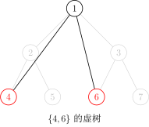
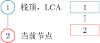
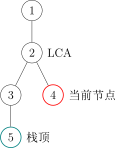
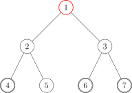
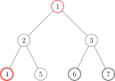
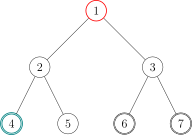
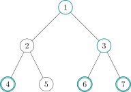
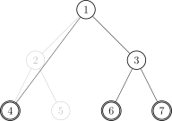

Virtual tree
引子¶
「SDOI2011」消耗战
题目描述¶
在一场战争中，战场由 n 个岛屿和 n-1 个桥梁组成，保证每两个岛屿间有且仅有一条路径可达。现在，我军已经侦查到敌军的总部在编号为 1 的岛屿，而且他们已经没有足够多的能源维系战斗，我军胜利在望。已知在其他 k 个岛屿上有丰富能源，为了防止敌军获取能源，我军的任务是炸毁一些桥梁，使得敌军不能到达任何能源丰富的岛屿。由于不同桥梁的材质和结构不同，所以炸毁不同的桥梁有不同的代价，我军希望在满足目标的同时使得总代价最小。
侦查部门还发现，敌军有一台神秘机器。即使我军切断所有能源之后，他们也可以用那台机器。机器产生的效果不仅仅会修复所有我军炸毁的桥梁，而且会重新随机资源分布（但可以保证的是，资源不会分布到 1 号岛屿上）。不过侦查部门还发现了这台机器只能够使用 m 次，所以我们只需要把每次任务完成即可。
输入格式¶
第一行一个整数 n，代表岛屿数量。
接下来 n-1 行，每行三个整数 u,v,w，代表 u 号岛屿和 v 号岛屿由一条代价为 c 的桥梁直接相连，保证 1\le u,v\le n 且 1\le c\le 10^5。
第 n+1 行，一个整数 m，代表敌方机器能使用的次数。
接下来 m 行，每行一个整数 k_i，代表第 i 次后，有 k_i 个岛屿资源丰富，接下来 k 个整数 h_1,h_2,\cdots ,h_k，表示资源丰富岛屿的编号。
输出格式¶
输出有 m 行，分别代表每次任务的最小代价。
数据范围¶
对于 100\% 的数据，2\le n\le 2.5\times 10^5,m\ge 1,\sum k_i\le 5\times 10^5,1\le k_i\le n-1。
虚树 Virtual Tree¶
对于上面那题，我们不难发现——如果树的点数很少，那么我们可以直接跑 DP。
首先我们称某次询问中被选中的点为——「关键点」。
设 Dp(i) 表示——使 i 不与其子树中任意一个关键点连通的 最小代价。
设 w(a,b) 表示 a 与 b 之间的边的权值。
则枚举 i 的儿子 v：
- 若 v 不是关键点：Dp(i)=Dp(i) + \min \{Dp(v),w(i,v)\}；
- 若 v 是关键点：Dp(i)=Dp(i) + w(i,v)。
很好，这样我们得到了一份 O(nq) 的代码。
听起来很有意思。
我们不难发现——其实很多点是没有用的。以下图为例：

如果我们选取的关键点是：

图中只有两个红色的点是 关键点，而别的点全都是「非关键点」。
对于这题来说，我们只需要保证红色的点无法到达 1 号节点就行了。
通过肉眼观察可以得出结论——1 号节点的右子树（虽然实际上可能有多个子树，但这里只有两个子树，所以暂时这么称呼了）一个红色节点都没有，所以没必要去 DP 它。
观察题目给出的条件，红色点（关键点）的总数是与 n 同阶的，也就是说实际上一次询问中红色的点对于整棵树来说是很稀疏的，所以如果我们能让复杂度由红色点的总数来决定就好了。
因此我们需要 浓缩信息，把一整颗大树浓缩成一颗小树。
由此我们引出了 「虚树」 这个概念。
我们先直观地来看看虚树的样子。
下图中，红色结点是我们选择的关键点。红色和黑色结点都是虚树中的点。黑色的边是虚树中的边。




因为任意两个关键点的 LCA 也是需要保存重要信息的，所以我们需要保存它们的 LCA，因此虚树中不一定只有关键点。
不难发现虚树中祖先后代的关系并不会改变。（就是不会出现原本 a 是 b 的祖先结果后面 a 变成 b 的后代了之类的鬼事）
但我们不可能 O(k^2) 暴力枚举 LCA，所以我们不难想到——首先将关键点按 DFS 序排序，然后排完序以后相邻的两个关键点（相邻指的是在排序后的序列中下标差值的绝对值等于 1）求一下 LCA，并把它加入虚树。
因为可能多个节点的 LCA 可能是同一个，所以我们不能多次将它加入虚树。
非常直观的一个方法是：
- 将关键点按 DFS 序排序；
- 遍历一遍，任意两个相邻的关键点求一下 LCA，并且哈希表判重；
- 然后根据原树中的祖先后代关系建树。
朴素算法的复杂度较高。因此我们提出一种单调栈做法。
在提出方案之前，我们先确认一个事实——在虚树里，只要保证祖先后代的关系没有改变，就可以随意添加节点。
也就是，如果我们乐意，我们可以把原树中所有的点都加入虚树中，也不会导致 WA（虽然会导致 TLE）。
因此，我们为了方便，可以首先将 1 号节点加入虚树中，并且并不会影响答案。
好，开始讲怎么用单调栈来建立一棵虚树吧。
首先我们要明确一个目的——我们要用单调栈来维护一条虚树上的链。
也就是一个栈里相邻的两个节点在虚树上也是相邻的，而且栈是从底部到栈首单调递增的（指的是栈中节点 DFS 序单调递增），说白了就是某个节点的父亲就是栈中它下面的那个节点。
首先我们在栈中添加节点 1。
然后接下来按照 DFS 序从小到大添加关键节点。
假如当前的节点与栈顶节点的 LCA 就是栈顶节点的话，则说明它们是在一条链上的。所以直接把当前节点入栈就行了。

假如当前节点与栈顶节点的 LCA 不是栈顶节点的话：

这时，当前单调栈维护的链是：

而我们需要把链变成：

那么我们就把用虚线标出的结点弹栈即可，在弹栈前别忘了向它在虚树中的父亲连边。

假如弹出以后发现栈首不是 LCA 的话要让 LCA 入栈。
再把当前节点入栈就行了。
下面给出一个具体的例子。假设我们要对下面这棵树的 4，6 和 7 号结点建立虚树：

那么步骤是这样的：
- 将 3 个关键点 6,4,7 按照 DFS 序排序，得到序列 [4,6,7]。
- 将 1 入栈。

我们用红色的点代表在栈内的点，青色的点代表从栈中弹出的点。
- 取序列中第一个作为当前节点，也就是 4。再取栈顶元素，为 1。求 1 和 4 的 LCA：LCA(1,4)=1。
- 发现 LCA(1,4)= 栈顶元素，说明它们在虚树的一条链上，所以直接把当前节点 4 入栈，当前栈为 4,1。

- 取序列第二个作为当前节点，为 6。再取栈顶元素，为 4。求 6 和 4 的 LCA：LCA(6,4)=1。
- 发现 LCA(6,4)\neq 栈顶元素，进入判断阶段。
- 判断阶段：发现栈顶节点 4 的 DFS 序是大于 LCA(6,4) 的，但是次大节点（栈顶节点下面的那个节点）1 的 DFS 序是等于 LCA 的（其实 DFS 序相等说明节点也相等），说明 LCA 已经入栈了，所以直接连接 1\to4 的边，也就是 LCA 到栈顶元素的边。并把 4 从栈中弹出。

- 结束了判断阶段，将 6 入栈，当前栈为 6,1。

- 取序列第三个作为当前节点，为 7。再取栈顶元素，为 6。求 7 和 6 的 LCA：LCA(7,6)=3。
- 发现 LCA(7,6)\neq 栈顶元素，进入判断阶段。
- 判断阶段：发现栈顶节点 6 的 DFS 序是大于 LCA(7,6) 的，但是次大节点（栈顶节点下面的那个节点）1 的 DFS 序是小于 LCA 的，说明 LCA 还没有入过栈，所以直接连接 3\to6 的边，也就是 LCA 到栈顶元素的边。把 6 从栈中弹出，并且把 LCA(6,7) 入栈。
- 结束了判断阶段，将 7 入栈，当前栈为 1,3,7。

- 发现序列里的 3 个节点已经全部加入过栈了，退出循环。
- 此时栈中还有 3 个节点：1,3,7，很明显它们是一条链上的，所以直接链接：1\to3 和 3\to7 的边。
- 虚树就建完啦！

我们接下来将那些没入过栈的点（非青色的点）删掉，对应的虚树长这个样子：

其中有很多细节，比如我是用邻接表存图的方式存虚树的，所以需要清空邻接表。但是直接清空整个邻接表是很慢的，所以我们在 有一个从未入栈的元素入栈的时候清空该元素对应的邻接表 即可。
建立虚树的 C++ 代码大概长这样：
代码实现
1 2 3 4 5 6 7 8 9 10 11 12 13 14 15 16 17 18 19 20 21 22 23 24 25 26 27 28 29 30 31 32 33 | |
于是我们就学会了虚树的建立了！
对于消耗战这题，直接在虚树上跑最开始讲的那个 DP 就行了，我们等于利用了虚树排除了那些没用的非关键节点！仍然考虑 i 的所有儿子 v：
- 若 v 不是关键点：Dp(i)=Dp(i) + \min \{Dp(v),w(i,v)\}
- 若 v 是关键点：Dp(i)=Dp(i) + w(i,v)
于是这题很简单就过了。
推荐习题¶
build本页面最近更新：，更新历史
edit发现错误？想一起完善？ 在 GitHub 上编辑此页！
people本页面贡献者：HeRaNO, Ir1d, konnyakuxzy, ksyx, Xeonacid, konnyakuxzy, greyqz, sshwy
copyright本页面的全部内容在 CC BY-SA 4.0 和 SATA 协议之条款下提供，附加条款亦可能应用